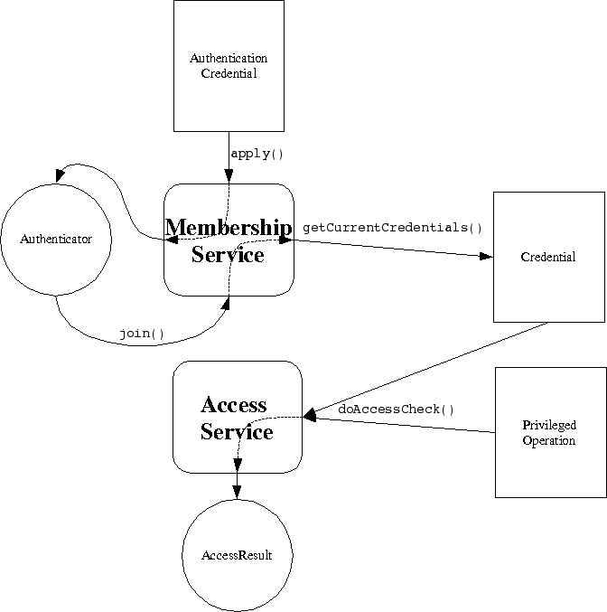

|
JXTA | |||||||||
| PREV PACKAGE NEXT PACKAGE | FRAMES NO FRAMES | |||||||||
See:
Description
| Interface Summary | |
|---|---|
| Authenticator | An Authenticator is returned by the apply() to the Membership Service of a peergroup. |
| InteractiveAuthenticator | Extension to standard Authenticator for authenticators which support interactive authentication with a human user. |
| MembershipService | Allows a peer to establish an identity within a peer group. |
The Membership Service allows a peer to establish an identity within a peer group. A peer have any number of identities at one time. Once an identity has been established a credential object is available which allows the peer to prove that it rightfully has that identity. Applications and services may restrict certain operations to specific identities. JXTA J2SE provides the Access Service to assist applications in matching privledges to identities.
The Membership Service is not associated with a particular JXTA protocol. Each Membership Service implementation is responsible for its own protocol definition (if any). This approach is used primarily so that JXTA bridges well to existing common Membership and Access technologies. For example; PKI, Kerberos, NTLM and API based interfaces such as PAM and JAAS. 
Credential,
AuthenticationCredential,
AccessService,
JXTA Protocols Specification : Protocols
|
JXSE | |||||||||
| PREV PACKAGE NEXT PACKAGE | FRAMES NO FRAMES | |||||||||